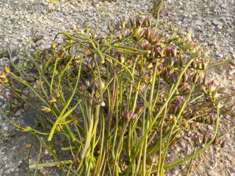
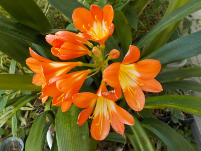
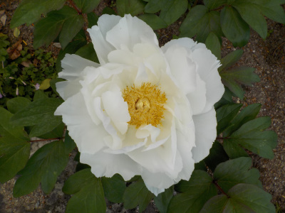
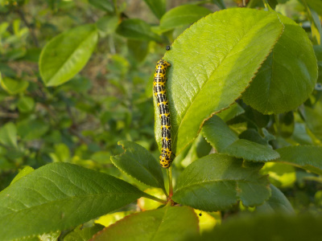

フリージアの花を摘みました。
2020/05/04

花がすっかり終わってしまったので、花芽を摘みました。
なんだか寂しいですね。
種を作らないで球根を太らすってことですが、球根が大きくなることはいいことなのかな？
大きいと花が重さで倒れてしまうんじゃないかってなんとなく思いました。
2020/05/04

花がすっかり終わってしまったので、花芽を摘みました。
なんだか寂しいですね。
種を作らないで球根を太らすってことですが、球根が大きくなることはいいことなのかな？
大きいと花が重さで倒れてしまうんじゃないかってなんとなく思いました。
2020/05/04

クンシランが咲きました。
派手ですね。
大きいので場所をとるのが困りますね。
2020/05/04

ボタンは終わったものが多いですが、ちょうど見頃のがありました。
まだ木が小さいので開花が遅かったのかもしれません。
連休中はのんびり見れる時間が多いので、このタイミングで咲くといいですね。
2020/05/04

これから木の下を歩くときは注意したいと思いました。
過去の日記
畑仕事じゃないよ。